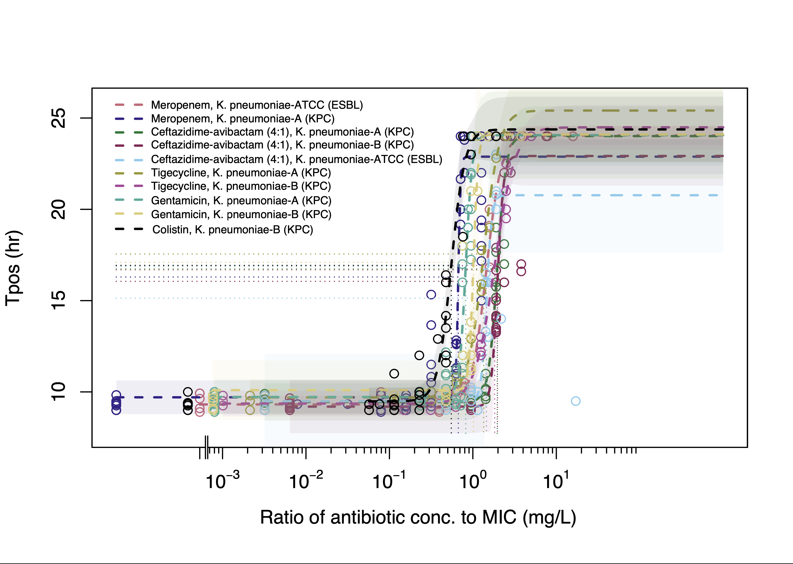
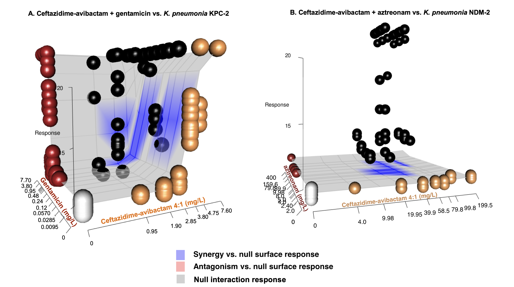

Summary
ECCMID 2023 Abstract (Submitted)
Pharmacodynamics of ceftazidime-avibactam monotherapy and combination regimens against carbapenemase-producing Klebsiella pneumoniae measured by bloodculture system time to positivity (Tpos)
Irene Zaghi¹, Monica Cricca¹‐², Vittorio Sambri¹‐², Jason Roberts³, Russell Lewis⁴
¹ Laboratorio Unico della AUSL della Romagna, in Pievesestina di Cesena, Italy
² Department of Diagnostic and Experimental Medicine, University of Bologna, Italy
³ The University of Queensland Centre for Clinical Research, Brisbane, Queensland, Australia
⁴ Department of Medical and Surgical Sciences, University of Bologna, Italy
Background: Time-to-positivity is a commonly reported index in bloodculture systems that can be adapted to measure bactericidal activity in the patient’s bloodstream during antibiotic therapy. We examined how simulated serum concentrations of ceftazidime-avibactam (CZA),meropenem (MEM), gentamicin(GEN), tigecycline (TGC), colistin (CST) or aztreonam (ATM) alone, or in combination, impacted Tpos measured against test inocula of KPC and NDM-carbapenemase producing K. pneumoniae (KP).
Materials and Methods: Experiments were carried out with two KPC-2 and one NDM-2 carbapenemase-producing KP isolate. We first analyzed how Tpos changes with inoculum (3x101-3x108 ) prepared in standard BacT/ALERT aerobic bloodculture bottles without antibiotic inactivating matrix. We then inoculated 1 mL of human serum containing antibiotic concentrations/combinations simulating a range of expected human exposures into bottles containing a fixed inoculum (1x104 CFU/mL) of test isolates. The relationship of Tpos vs. antibiotic concentrations was fitted to 4-parameter logistic regression model to estimate EC50/EC90. For combinations, a predicted null-response (Bliss-independence) interaction model was compared to Tpos observed with the antibiotic combination array to identify synergistic or antagonistic interactions.
Results: In the absence of antibiotic-containing serum, all isolates demonstrated a linear relationship between Tpos of 9.4-10.8h to 4.5-5.2h over an inoculum range spanning 3x101 to 3x108 CFU/mL. A consistent dose-response relationship between Tpos and serum antibiotic exposures was observed for all antibiotics with the EC50 Tpos of ~16 hr evident at 1xMIC (Fig 1). Combination experiments revealed prolongation of Tpos for most antibiotic combinations (Table, Fig 2a) with the greatest improvement in Tpos observed with CZA + ATM against the NDM-producing KP (Table, Fig 2b.)


| Antibiotic combination | Strain | Mean Tpos change (hr) from predicted null response surface (95% CI) |
| CZA + GENT | KP_A (KPC) | + 5.68 (5.09-6.53) |
| CZA + GENT | KP_B (KPC) | + 3.05 (2.16-4.03) |
| CZA + COL | KP_B (KPC) | + 2.31 (1.40-3.20) |
| CZA + TGC | KP_B (KPC) | + 1.66 (0.72-2.73) |
| CZA + ATM | KP_NDM | + 10.33 (10.32-10.34) |
Conclusions: Tpos was a robust and reproducible indicator of antimicrobial activity in serum that is capable of detecting synergistic antibiotic interactions. Further test optimization could support the use of this simple monitoring approach of antimicrobial activity in patient serum.